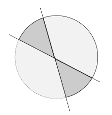
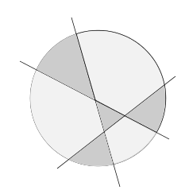

| When cutting a circle with two straight lines, it can be divided into a maximum of four regions: |  |
| With three lines, it can be divided into a maximum of seven regions. |  |

What is the maximum number of regions that can be made using
only one straight line cut?
What is the maximum number of regions that can be made using
four straight line cuts?
Five?
What is the maximum number of regions that can be made using
ten straight line cuts? (Hint: don't try to draw this - look for a pattern in the relationship between the number of cuts and the number of regions.)
I'm thinking of two numbers. One of the numbers is four times as big as the other one. When the two numbers are multiplied together, the product is $36$.
What are the numbers?
In a group of 12 students, 7 students have brown hair, 9 students have brown eyes, and 5 students have both brown hair and brown eyes.
How many students in the class have neither brown hair nor blue eyes?